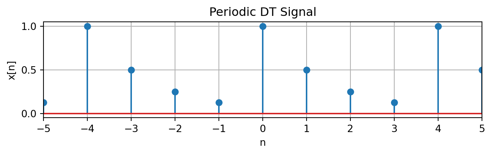
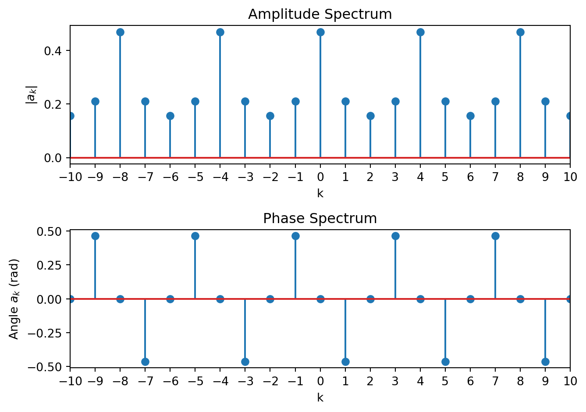

15 DT Fourier Series
Recall the complex exponential \(z^n\) is the Eigenfunction of DT LTI systems. If we can decompose an input into a (possibly infinite) sum of such signals, we can easily determine the output using the superposition principle. In this section we consider the decomposition when the input is periodic, called the DT Fourier Series (DTFS). The DTFS is similar, but not identical to the CTFS. Notably, the approximation requires only a finite number of terms, there are no convergence issues, and the resulting spectrum is a periodic function.
Recall a DT signal \(x[n]\) is periodic, with fundamental frequency \(\omega_0 = \frac{2\pi}{N}\) rad/sec, if \(x[n] = x[n+kN]\) for integer multiple \(k\) and fundamental period \(N \in \mathbb{Z}\). As we shall see, in this case the complex base of the Eigenfunction becomes \(z_k = e^{jk\omega_0}\), and the decomposition is a finite sum. This gives the input-output relationship for a stable DT LTI system as \[x[n] = \sum\limits_{k = N_0}^{N_0 + N-1} a_k e^{jk\omega_0n} \;\longrightarrow\; y[n] = \sum\limits_{k = N_0}^{N_0 + N-1} H\left(e^{j k\omega_0}\right) a_k e^{jk\omega_0 n}\] where \(H\left(e^{j k\omega_0}\right)\) are the Eigenvalues or DT frequency response. We now turn to how to find the coefficients \(a_k\).
15.1 Synthesis and Analysis Equation
Similar to the CTFS we wish to show that any periodic DT signal can be represented by the sum of complex exponentials whose frequencies are harmonics of the fundamental. This differs from the CTFS in that there are only \(N\) distinct harmonics, so that the sum is over a finite range \[\boxed{x[n] = \sum\limits_{k = N_0}^{N_0 + N-1} a_k e^{jk\omega_0n} }\] where \(N\) is the period and \(N_0\) is any starting index for the sum. Note the course text defines \(<N> = \{ N_0, N_0 + 1, \cdots (N_0 + N-1) \}\). This is called the synthesis equation of the DT Fourier series.
One approach to find the coefficients \(a_k\) is to note that there are a finite number of terms in the summation and the signal has a finite number of values over one period. This gives a system of \(N\) linear equations in \(N\) unknowns (the \(a_k\)’s) \[\begin{aligned} x[N_0] &= \sum\limits_{k = N_0}^{N_0 + N-1} a_k e^{jk\omega_0N_0}\\ x[N_0+1] &= \sum\limits_{k = N_0}^{N_0 + N-1} a_k e^{jk\omega_0(N_0+1)}\\ \vdots\hspace{2em} &= \hspace{2em}\vdots\\ x[N_0+N-1] &= \sum\limits_{k = N_0}^{N_0 + N-1} a_k e^{jk\omega_0(N_0+N-1)}\\ \end{aligned}\] which can be solved to find the coefficients using linear algebra.
Example
Consider the periodic DT signal \(x[n] = \cdots -1, 1, -1, 1, -1, 1, \cdots\) where \(x[0] = 1\). The period is \(N=2\) so that \(\omega_0 = \pi\). If we let \(N_0 = 0\), the system of equations is
\[\begin{aligned} x[0] &= \sum\limits_{k = 0}^{1} a_k = a_0 + a_1 = 1\\ x[1] &= \sum\limits_{k = 0}^{1} a_k e^{jk\pi} = a_0 - a_1 = -1 \end{aligned}\]which has the solution \(a_0 = 0\) and \(a_1 = 1\) and \(x[n] = e^{j\pi n}\).
Another approach is similar to that taken when deriving the CT Fourier Series. Beginning with the synthesis equation \[x[n] = \sum\limits_{k = N_0}^{N_0 + N-1} a_k e^{jk\omega_0n}\] we multiply both sides by \(e^{-j\frac{2\pi r}{N} n}\) for \(r \in \mathbb{Z}\) and sum over \(N\) terms \[\sum\limits_{n = N_0}^{N_0 + N-1} x[n]e^{-j\frac{2\pi r}{N} n} = \sum\limits_{n = N_0}^{N_0 + N-1} \sum\limits_{k = N_0}^{N_0 + N-1} a_k e^{jk\omega_0n}e^{-j\frac{2\pi r}{N} n}\] We then interchange to order of summation on the right-hand-side \[\sum\limits_{n = N_0}^{N_0 + N-1} x[n]e^{-j\frac{2\pi r}{N} n} = \sum\limits_{k = N_0}^{N_0 + N-1} a_k \underbrace{\sum\limits_{n = N_0}^{N_0 + N-1} e^{jk\omega_0n}e^{-j\frac{2\pi r}{N} n}}\] Since \(\omega_0 = \frac{2\pi}{N}\), the bracketed term is
\[\begin{aligned} \sum\limits_{n = N_0}^{N_0 + N-1} e^{j(k-r)\frac{2\pi}{N} n} &= \begin{cases} N & \mbox{ if } k-r = 0, \pm N, \pm 2N, \cdots\\ 0 & \mbox{ else } \end{cases}\\ &= N\delta[(k-r) + mN] \mbox{ for arbitrary } m \in \mathbb{Z} \end{aligned}\]and the right-hand side is \[\sum\limits_{k = N_0}^{N_0 + N-1} a_k N \delta[(k-r) + mN] = Na_r\] since \(N_0 < mN < N_0 + 1\) for some \(m\). Solving for \(a_r\) gives the analysis equation of the DT Fourier series: \[\boxed{a_r = \frac{1}{N} \sum\limits_{n = N_0}^{N_0+N-1} x[n]e^{-j\frac{2\pi}{N} r n }}\] where the summation can be over any interval of length \(N\) and the symbol for the subscript (integer \(r\)) is arbitrary. The DT Fourier Series coefficients are also called the spectrum of the signal. In general the \(a_k\) are complex. Note the spectrum is periodic in \(N\). The function of \(k\), \(|a_k|\) is called the amplitude spectrum. The function of \(k\), \(\angle a_k\) is called the phase spectrum. When plotting the coefficients it is common to plot the amplitude and phase spectrum together over a single interval of length \(N\) (since it is periodic).
Example
A simple way to construct a DT periodic signal is to use the modulus \(\%\) operator. For example, \[x[n] = \gamma^{n \% N} \mbox{ for any } \gamma \in \mathbb{C}\] is periodic in \(N\), e.g. \(x[n] = \left(\frac{1}{2}\right)^{n \% 4}\)
The synthesis equation is given by \[x[n] = \sum\limits_{k = N_0}^{N_0 + N-1} a_k e^{jk\omega_0n}\] Where the coefficients are found using the analysis equation. Let \(N_0 = 0\) arbitrarily, then
\[\begin{aligned} a_k &= \frac{1}{N} \sum\limits_{n = 0}^{N-1} x[n]e^{-j\frac{2\pi}{N} k n }\\ &= \frac{1}{N} \sum\limits_{n = 0}^{N-1} \gamma^n e^{-j\frac{2\pi}{N} k n }\\ &= \frac{1}{N} \sum\limits_{n = 0}^{N-1} \left(\gamma e^{-j\frac{2\pi}{N} k}\right)^n\\ a_k &= \frac{1}{N} \frac{1-\left(\gamma e^{-j\frac{2\pi}{N} k}\right)^N}{1-\left(\gamma e^{-j\frac{2\pi}{N} k}\right)} \end{aligned}\]We can plot the spectrum of this signal (using for example Matlab)
gamma = 0.5;
N = 4;
k = -10:10;
a = (1-(gamma*exp(-j*2*pi*k/N)).^N)./(N*(1-gamma*exp(-j*2*pi*k/N)));
h0 = subplot(2,1,1);
h1 = stem(k, abs(a));
h2 = xlabel('k');
h3 = ylabel('|a(k)|');
h4 = title('Amplitude Spectrum');
h5 = subplot(2,1,2);
h6 = stem(k, angle(a));
h7 = xlabel('k');
h8 = ylabel('Angle a(k)');
h9 = title('Phase Spectrum');Giving the amplitude and phase spectrum plot

Example
Find the DTFS of \(x[n] = \cos[\tfrac{\pi}{4}n]\). Note \(N=8\) and \(\omega_0 = \tfrac{\pi}{4}\). Using Euler’s formula \[x[n] = \frac{1}{2}e^{j\frac{\pi}{4}n} + \frac{1}{2}e^{-j\frac{\pi}{4}n}\] The synthesis equation is \[x[n] = \sum\limits_{k = 0}^{N-1} a_k e^{jk\omega_0n} = a_0 + a_1e^{j\frac{\pi}{4}n}+ a_2e^{j\frac{2\pi}{4}n} + \cdots + a_7e^{j\frac{7\pi}{4}n}\] Comparing to the expansion above and noting that \(e^{-j\frac{\pi}{4}n} = e^{j\frac{7\pi}{4}n}\) we see that \[a_k = \begin{cases}
\frac{1}{2} & k=1\\
\frac{1}{2} & k=7\\
0 & \mbox{else}
\end{cases}\] for \(k \in [0,7]\) and \(a_k = a_{k\%8}\) for all \(k\).
15.2 Properties of the DT Fourier Series
Given two signals \(x[n]\) and \(y[n]\) periodic in \(N\) with \(\omega_0 = \frac{2\pi}{N}\), having DT Fourier coefficients \(a_k\) and \(b_k\) respectively.
Linearity. The coefficients of the signal \[z[n] = Ax[n] + By[n] \mbox{ for constants } A,B\] are \(Aa_k + Bb_k\)
Index Shifting. The coefficients of \[z[n] = x[n-n_0] \mbox{ are } e^{-jk\omega_0 n_0}a_k\] that is, it adds a phase shift.
Frequency Shift. The coefficients of \[z[n] = x[n]e^{jm\omega_0n} \mbox{ are } a_{k-m}\]
Index Reversal. The coefficients of \[z[n] = x[-n] \mbox{ are } a_{-k}\]
Multiplication. The coefficients of \[z[n] = x[n] \cdot y[n] \mbox{ are } \sum\limits_{m = N_0}^{N_0 + N -1} a_m\cdot b_{k-m}\] the discrete convolution of the individual signals’ coefficients.
Convolution. The coefficients of \[z[n] = x[n] * y[n] \mbox{ are } N a_k b_k\]
Conjugate Symmetry. The coefficients of \[z[n] = x^*[n] = \Re{x[n]} - j\Im{x[n]} \mbox{ are } a_{-k}^*\] A consequence of this property is that real, even signals have real, even \(a_k\); and real, odd signals have purely imaginary, odd \(a_k\). Thus if \(x[n]\) is real \(|a_k|\) is an even periodic function of \(k\) and \(\angle a_k\) is an odd periodic function of \(k\).
Parseval’s Relation. The power of the signal with Fourier series coefficients is \[\frac{1}{N} \sum\limits_{n = N_0}^{N_0 + N -1} |x[n]|^2\;dt = \sum\limits_{k = N_0}^{N_0+N-1} |a_k|^2\]
15.3 Comparison of CT and DT Fourier Series
A summary of the CT and DT Fourier Series is as follows.
In CT, a periodic signal \(x(t)\) can be decomposed as a countably infinite combination of complex sinusoids at harmonic frequencies of the fundamental. The Fourier series coefficients are a discrete signal that is a-periodic.
\[x(t) \approx \sum\limits_{k = -\infty}^{\infty} a_k \, e^{j k\omega_0 t} \hspace{2em} a_k = \frac{1}{T_0} \int\limits_{0}^{T_0} x(t)e^{-jk\omega_0 t} \; dt\]
In DT, a periodic signal \(x[n]\) can be decomposed as a finite combination of complex sinusoids at harmonic frequencies of the fundamental. The Fourier series coefficients are a discrete signal that is periodic.
\[x[n] = \sum\limits_{k = N_0}^{N_0 + N-1} a_k e^{jk\omega_0n} \hspace{2em} a_k = \frac{1}{N} \sum\limits_{n = N_0}^{N_0+N-1} x[n]e^{-j\frac{2\pi}{N} k n }\]